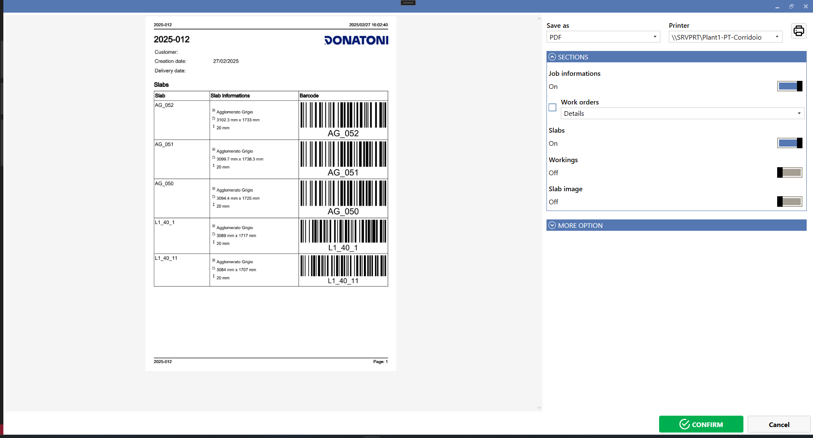
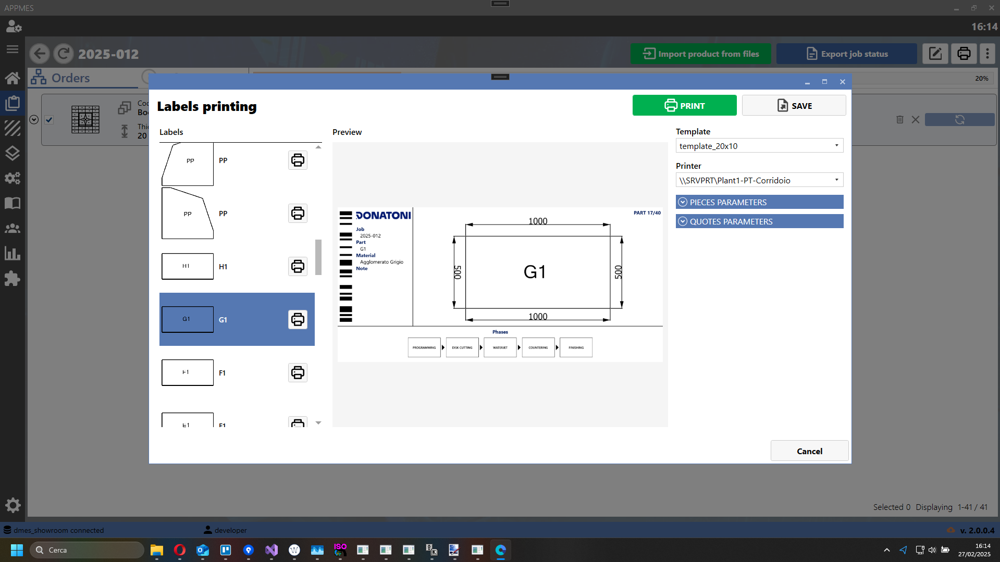
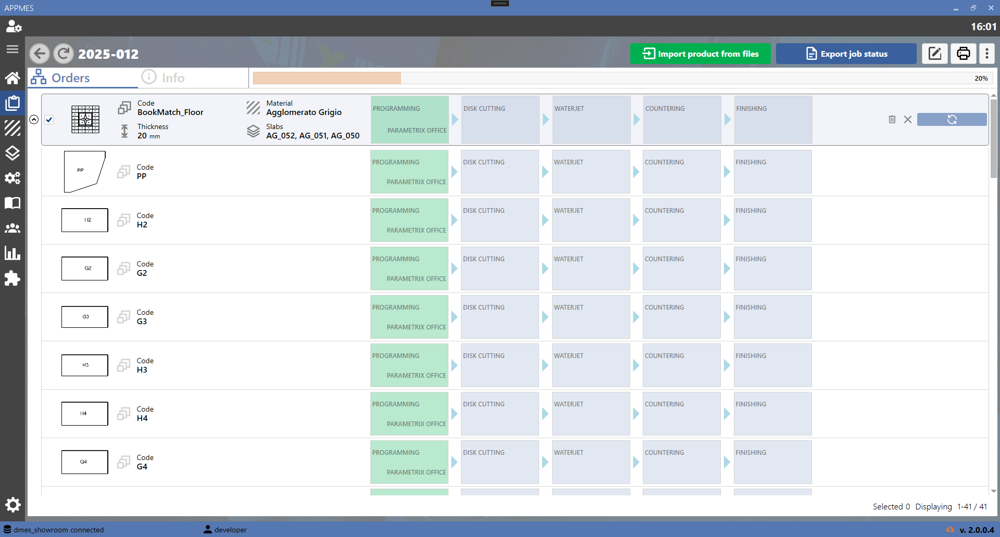
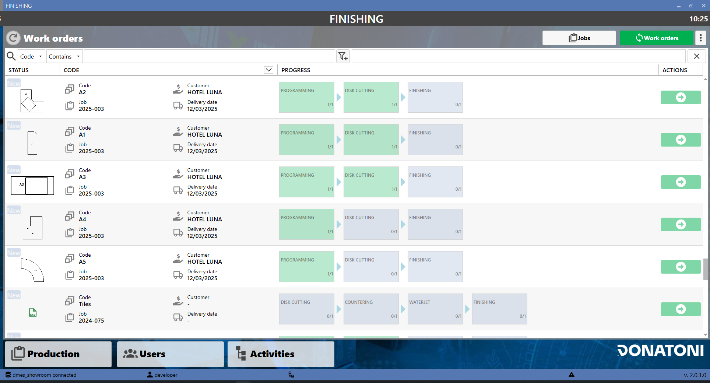
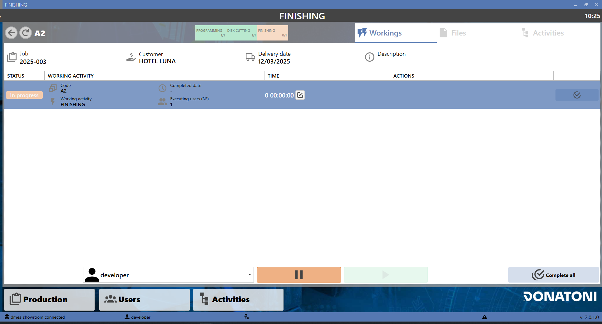

PRO
- COMMESSE
- PEZZI DA DXF, CSV
- CICLO DI LAVORO
- ASSEGNAZIONE LASTRE
- REPORT
- ETICHETTE
- INTEGRAZIONE CON PARAMETRIX UFFICIO
- PROGRESSIONE COMMESSA
- STAZIONI
PACCHETTO MINIMO: BASE + LABEL + SLABS
PACCHETTO PER LA GESTIONE DELLA PRODUZIONE INTESA COME COMMESSE E CICLI DI LAVORO
D-MES + JOBS è lo strumento aziendale che aiuta a snellire le attività di gestione della produzione e consente di concentrarsi sugli elementi di valore del tuo business.
Gestire la produzione in maniera attenta è la base di tutte le attività per raggiungere gli obiettivi aziendali di fatturato e soprattutto di marginalità. Al contempo garantire un servizio preciso e puntuale permette di fidelizzare i clienti ed accrescere la propria credibilità.
Le diverse funzionalità sono descritte nei paragrafi successivi con l’ausilio di immagini.
Il pacchetto JOBS si deve integrare, modifica e automatizza alcuni processi aziendali; necessita quindi di analisi e confronto con le varie figure aziendali per una corretta e funzionale impostazione del sistema.
La fornitura del pacchetto aggiuntivo comprende:
4 giornate uomo per l’analisi, la configurazione del sistema, piccole personalizzazioni e spiegazioni sull’utilizzo del software, giornate generalmente adatte per installazione e configurazione di un sistema fino a 5 aree di lavoro e 10 macchine. Il cliente verrà preventivamente informato quando, dall’esito di analisi o dall’avanzamento lavori, ci dovessero essere criticità.
La fornitura NON INCLUDE:
personalizzazioni particolari
installazione su hardware non adatto
costi di viaggio, vitto e alloggio per lavori presso il cliente
COMMESSE
Pagina di gestione delle commesse, posso creare una nuova commessa o modificarne una già presente

PEZZI DA DXF, CSV
I pezzi da produrre per le commesse possono essere importati da file dxf o csv

CICLO DI LAVORO
Nella commessa posso inserire il ciclo di lavoro dei vari pezzi

sono disponibili anche informazioni sui file caricati della commessa nella pagina info

ASSEGNAZIONE LASTRE
Alla commessa posso assegnare le lastre da utilizzare

REPORT
Posso stampare un report riassuntivo di commessa

ETICHETTE
Posso stampare etichette relative alla commessa con informazioni quali nome, data, etc
oppure etichette per i pezzi

INTEGRAZIONE CON PARAMETRIX UFFICIO
Nel ciclo di lavoro può essere incluso anche la programmazione in ufficio con Parametrix
Quindi la possibilità di completare il nesting dei pezzi sulle lastre

Le lastre programmate vengono poi riportate a DMES come pronte per il taglio in fresa.

PROGRESSIONE COMMESSA
Posso visualizzare lo stato di avanzamento della commessa e di ogni singolo pezzo

STAZIONI
La gestione delle commessa e lo stato di avanzamento sono disponibili anche per le stazioni manuali

In ogni stazione posso visualizzare i dettagli di ogni commessa, posso avviare attività, metterle in pausa e completare le operazioni previste per quella stazione

Inoltre posso visualizzare file di commessa, pdf, dxf, immagini e altro